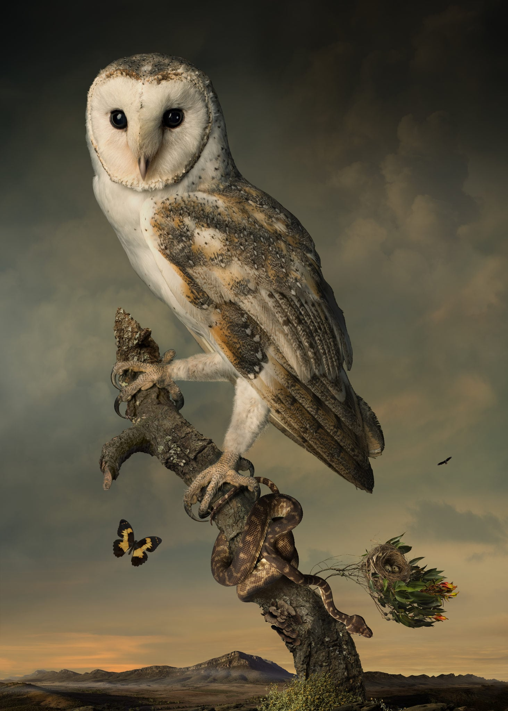
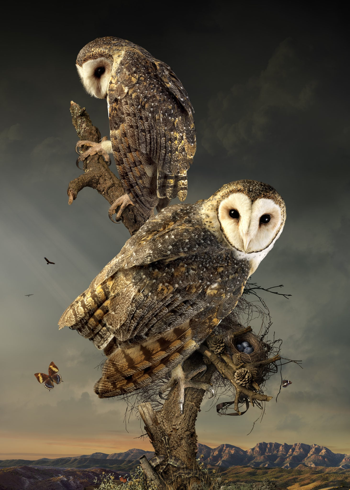
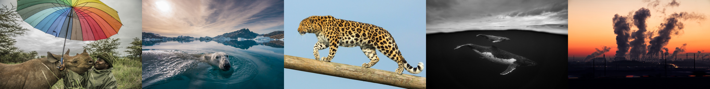

Humans are driving one million species to extinction
Up to one million plant and animal species face

Black rhinos are the smaller of the two African rhino Bas Huijbregts
1 dollar donation can save a full
click to Donate All donations go to associations and foundations tasked with endangered animals